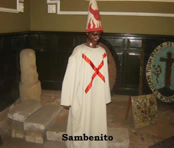
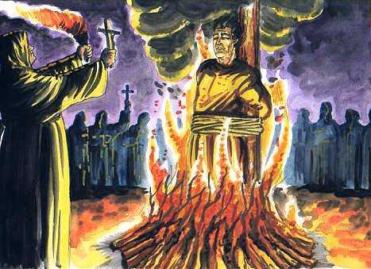

Sobre la herejía y la Inquisición [1]
(fragmento)
Por Jorge Hernández
La palabra herejía en su significado original del griego, quiere decir “opinión” y estaba limitada no solo al terreno de las ideas, sino que cubría una serie de implicaciones sociales que podrían tener impacto en las creencias, la política y la cultura. La herejía, es decir, la opinión distinta a la oficial, ha sido combatida desde antaño. La iglesia primitiva condenaba a los herejes a la excomunión, privándoseles de participar de la salvación de las almas en el anunciado juicio final. El castigo mientras tanto, alejaba al hereje de la participación comunitaria en vida, negándosele los mecanismos de acceso a ella. Las familias de los condenados quedaban marcadas por la infamia durante generaciones. El veredicto era sancionado, notificado y ejecutado por un equipo de ilustres que, quitaban al hereje todos sus derechos en la bien o mal llevada convivencia con el resto de la comunidad. El hereje, era un individuo con una opinión divergente considerada nociva para las normas de participación ciudadana y una conducta demasiado independiente o emancipada para las normas de convivencia establecidas por el clero. Sin embargo, el equipo o tribunal encargados de impartir castigos a los herejes caían con frecuencia en el error, el abuso y la crueldad.
La herejía era considerada una forma de ofensa religiosa y social. Hasta antes del siglo XIII la herejía era sancionada por poderes otorgados por el papa a nivel local, sin una estructura organizada ni reglas de aplicación precisas. A partir de esa fecha se empezó a considerar incluso a movimientos sociales como el Catarismo del sur de Francia y otros como herejes, por apartarse de los asuntos de la iglesia o por considerárseles socialmente subversivos. En casos de herejía manifiesta, el hereje era condenado a la pena de muerte, un castigo que paso a ser regularmente establecido. Sin embargo, aunque la herejía era conocida y castigada desde mucho antes, no existía razón para investigar (Inquisitio!) la misma al momento de sancionar el castigo.
La inquisición (Inquisitio Haereticae Pravitatis Sanctum Officium) se relaciona con varias instituciones cuyo objetivo era alejar y suprimir la herejía de la iglesia católica. La primera inquisición medieval se fundó en 1184 mediante la bula del Papa Lucio III, en el sur de Francia, para combatir la herejía de los Cátaros, en 1249 se instala en el reino de Aragón que mas tarde seria conocida como la inquisición española bajo directo control de la monarquía y cuyo ámbito de acción se extendería hasta sus colonias en América. La Inquisición española se fundo por bendición papal en 1478, a proposición de los monarcas Fernando V e Isabel I. La razón de su oficialización era la sospecha que recaía sobre los judíos, que por presión de la sociedad se habían convertido al cristianismo (marranos), mas tarde se extendió a los musulmanes conversos (moros o moriscos) y después, a quienes pudieran caer en tentación de apoyar el naciente protestantismo de Lutero. Un fenómeno o creencia arraigada en lo popular, simbolizando la figura de la bruja copulando con el demonio, se convertiría en motivo probado para ejecutar a mujeres acusadas de prácticas hechiceras. En 1484 Inocencio VIII mediante la bula Summis Desideratis Affectibus, haciéndose eco de la leyenda popular declara oficialmente la existencia de la brujería y se da comienzo a la “caza de brujas”: personas de ambos sexos que fornican con los demonios, que mediante hechizos y conjuros, sofocan, extinguen y hacen desparecer la fecundidad femenina, la propagación de los animales y la mies de la tierra.

La inquisición se convirtió en instrumento del estado con una destacada participación de funcionarios de la iglesia de la orden de los dominicos. Desde su fundación en España, la Inquisición se dedico a perseguir conversos al cristianismo y focos protestantes nacientes. Mas tarde a falta de reos para juzgar, el tribunal inquisidor extiende su manto de sospechas hacia los nuevos cristianos, la censura de los libros, la homosexualidad, la blasfemia, el incumplimiento de celibato, a coartar la libertad de expresión e impedir la propagación de ideas ilustradas o excesivamente progresistas. Este periodo que va desde 1478 a 1874 resume las actividades inquisitorias en varias etapas: fundación, decaída, rebrote, disolución y abolición.
Fray Tomas de Torquemada, fue el primer y más notable gran inquisidor, responsable de la ejecución de miles de supuestos herejes y de un trato vejatorio y de exclusión de otros miles. Con el apoyo de Torquemada judíos y musulmanes fueron expulsados de España en 1492 y la tortura en diferentes formas y sofisticamientos, se empleaba para extraer declaraciones y pruebas a los acusados sobre un amplio espectro de delitos. Hay quienes pretenden torcerle el brazo a la historia presentándonos un Torquemada con espíritu de justicia, templado en la piedad, la prudencia, un gran legislador con cualidades de santo, cuando la realidad lo sitúa como predecesor de otros ejemplos que se verían con posterioridad en la historia de la humanidad. Se dice que, al abrir la tumba de Torquemada para trasladar sus restos, los presentes dan cuenta de un olor dulce y grato: el perfume de la santidad. La gente comenzó a rezar frente a su tumba convencidos de estar presenciando un milagro pero, el fenómeno es debido a reacciones químicas que acompañan a la podredumbre.

El gran inquisidor y su tribunal tenían jurisdicción sobre los tribunales locales y en su afán por capturar herejes se establecía por semanas o meses en la plaza pública de los pueblos donde ordenaba que los herejes se entregaran por propia iniciativa. Si el sospechoso no se hacia presente, el tristemente celebre delator que, por aversión personal, motivos dudosos o suspicacias diversas, se encargaba de revelar la identidad del hereje, quien era detenido por la policía inquisitorial para se juzgado. La sentencia del castigo se pronunciaba en una ceremonia pública y estos podían consistir en una peregrinación, un suplicio público, una multa, cargar con una cruz, confiscación de propiedades, encarcelamiento, prisión perpetua o la muerte. El campo de acción de la inquisición se ampliaría con el tiempo a los grupos heterodoxos como hermandades y luego a brujas, hechiceros, adivinos, bígamos, sodomitas y usureros.
La caza de brujas se llevo a cabo principalmente en España y el norte de Europa, donde la cifra de ejecutados supera los 50 000 en su mayoría mujeres. La bruja era una hechicera, una figura mística local con una especialidad de adivinadora o curandera y su finalidad era el lucro. La versión más degenerada de la bruja da cuenta de una figura irreal, anónima, sobrenatural, pervertida por el diablo, de intenciones malvadas y sanguíneas motivos más que suficientes para morir en los fuegos salvadores de la hoguera purificadora de la inquisición.

¿Cómo procesaba la Inquisición? [2]
(fragmento)
por Maurice Soulie
Las denuncias eran recibidas en la sede del Santo Oficio. Se mantenían secretas. Los teólogos que formaban parte de la Inquisición examinaban esas denuncias y decidían si eran justificadas y merecían que se les diera continuación. En caso afirmativo, el presunto culpable era arrestado y encerrado en la prisión de la Inquisición.
Los acusados no tenían derecho a tener abogado, porque dado que eran enemigos de la religión católica, hubiera sido necesario que el abogado abogase contra Dios. Solamente estaban autorizados a recibir el consejo de un jurista que no formaba parte del personal de la Inquisición. Los acusados eran interrogados en sus celdas y luego sometidos a la tortura para que confesaran.
Los suplicios más comunes eran: El suplicio del agua y el del fuego. El acusado sometido a la tortura del agua estaba acostado con la cabeza más baja que los pies. El verdugo le introducía en el fondo de la garganta un pedazo de género fino mojado, uno de cuyos extremos le cubría la nariz, y luego echaba agua gota a gota con el fin de impedirle respirar. Sucedía a menudo, que al final del interrogatorio, cuando el verdugo retiraba el pedazo de género, éste estaba empapado de sangre de los vasos rotos por los esfuerzos que había hecho el desgraciado para poder respirar.

Antes de aplicar el suplicio del fuego, el verdugo frotaba los pies del paciente con aceite o tocino, y lo ponía delante de la llama, de modo que sus pies se agrietaban por la penetración de la grasa hirviendo.

Después de un plazo que variaba entre seis meses a seis años, se hacía la censura definitiva de las piezas del proceso, y los Inquisidores redactaban el juicio que el acusado solo debía conocer el día del auto de fe.
Sin embargo, el acusado era a veces admitido a escuchar la lectura del proceso hecho contra él y responder sobre ciertos puntos. Pero generalmente esta licencia sólo era una trampa para poner al prisionero en contradicción con lo que había dicho en su primer interrogatorio varios meses o varios años antes.
En el primer grado de culpabilidad, el acusado era declarado suspecto “ad cautelan”, y en segundo grado, “delevi”. En estos dos casos debía pronunciar la fórmula de abjuración de rodillas en el coro de la iglesia, y luego hacer penitencia según los ritos habituales.
Los herejes, considerados impenitentes, eran conducidos al auto de fe para oír sentencia. Si ésta era favorable, eran condenados a ser estrangulados y luego quemados. Si era desfavorable, debían ser quemados vivos. Los condenados eran entonces muñidos del sambenito y les cubrían la cabeza con una mitra de tela gris, llamada coroza. El sambenito era una especie de largo escapulario que llegaba hasta las rodillas, generalmente de lana amarilla. Si el condenado había abjurado antes de su condena, el sambenito sólo llevaba una cruz verde en el pecho y en la espalda; si era muy suspecto y había sido condenado a ser estrangulado antes de ser quemado, el sambenito y la coroza estaban cubiertos de llamas rojas inclinadas; si el condenado impenitente debía ser quemado vivo, las llamas eran derechas, y diablos rojos las atizaban.
{kind=link}
El auto de fe no era más que la lectura pública de las sentencias, y no como se cree comúnmente, los suplicios, que se ejecutaban en uno de los barrios de la ciudad, en el Quemadero.
El auto de fe era una de las ceremonias más importantes de la vida española. La víspera, los familiares del Santo Oficio recorrían a caballo las calles, precedidos de un alguacil y de heraldos portadores de una proclamación que leían en alta voz.
Esta se componía de dos artículos. El primero prohibía que, hasta la ejecución de la sentencia en el auto de fe, nadie en la ciudad hiciera uso de armas ofensivas o defensivas, bajo pena de excomunión mayor; el segundo prohibía la circulación de carrozas, literas, caballos o mulas, por las calles donde debía levantarse el cadalso.

El día de la ejecución, las calles estaban, desde el alba, negras de gente que esperaba la salida de los prisioneros. Primero aparecía el Dominico, llevando la cruz parroquial; luego dos filas de penitentes, que con las espaldas desnudas se flagelaban, después venía el fiscal del Santo Oficio llevando el estandarte de damasco rojo con el escudo negro y blanco de la Orden del San Domínico y las armas reales bordadas en oro, y de la Inquisición.
Detrás del fiscal desfilaban los prisioneros a doce pasos uno de otro. Estaban cubiertos con el sambenito y la coroza con llamas derechas e inclinadas, según fueran condenados a ser quemados vivos o ser estrangulados antes de ser quemados. Los impenitentes y los blasfemadores estaban amordazados y tenían las manos atadas, los reconciliables llevaban un sambenito gris con dos cruces verdes y un gorro puntiagudo de tela gris.
Los prisioneros debían escuchar la misa ante un altar colocado ex profeso, y luego un predicador trataba de inducirlos a la contrición por medio de un largo sermón.
Después de la lectura de las sentencias, el arzobispo daba la absolución eterna a los reconciliados, que eran conducidos inmediatamente a la prisión. Los otros, los condenados a muerte, eran conducidos al Quemadero.
Allí, los que debían ser estrangulados eran entregados a los cuidados del verdugo, que pasando una cuerda alrededor del cuello del paciente la ajustaba más o menos rápidamente, según lo que hubiera que hacerlo sufrir. Mientras tanto, los condenados a ser quemados vivos se retorcían en las llamadas y aullaban de dolor delante del monje, que les presentaba un crucifijo. Durante toda la ejecución, los religiosos de las congregaciones rezaban en voz alta y cantaban himnos. Algunos esperaban que por milagro un condenado pudiera escapar a las llamas, para recogerlo, cuidarlo y convertirlo.
Notas
Volver a la sección Sociedad y religión
Comentarios
Comments powered by Disqus